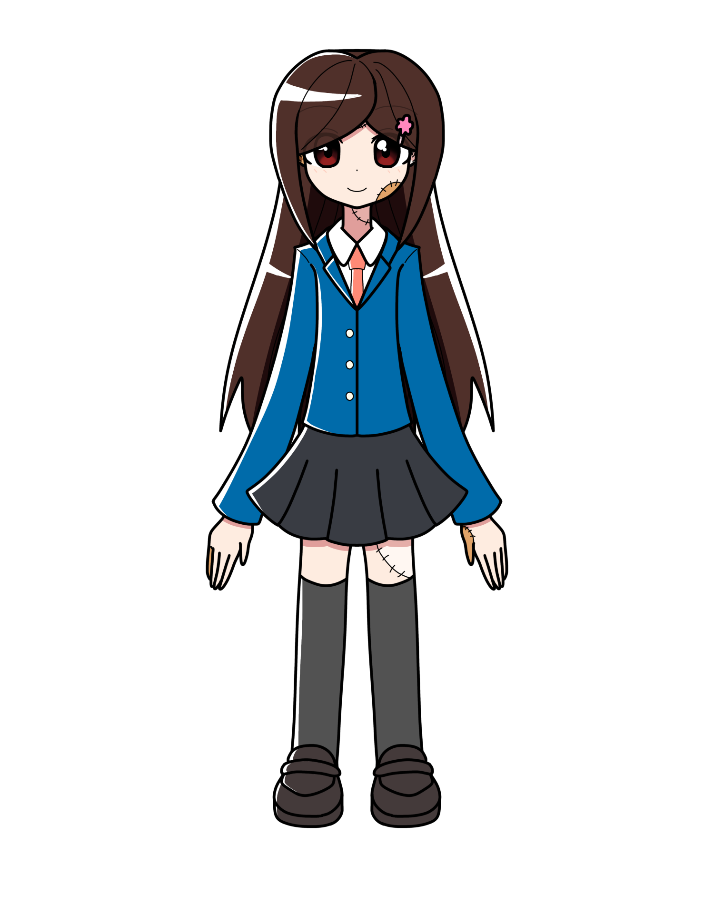

ビクトリア・ラコック
概要
ヒック・ラコックという博士によって生み出された、
人造人。
普段は学園の警備員兼門番を務めている。
休みの日は父の研究の手伝いをしている。
プロフィール
| 種族 | 人造人 |
|---|---|
| 性別 | 女性 |
| 年齢 | 実年齢3歳 精神年齢19歳ほど |
| 誕生日 | 11月27日 |
| 身長 | 210cm |
| 血液型 | |
| 出身 | FR-EQテルト |
| イメージカラー | 青 |
| イメージCV | 沢城みゆき |
人物像
外見
赤みがかった暗めの茶髪をロングにしている。
性格
真面目で優しい性格。
説明が説明になってないことが多い。
例えば、「あなたの父親ってどんな人？」と訊いた場合
「わたしのお父さんはわたしよりも大人です！」と答えてくる。
口調
一人称は「わたし」
能力
経歴
活躍
人物関係
余談
このキャラクターはマリスバルが小学5～6年生の頃に考えたキャラクター。
フランケンシュタインの怪物をかわいらしい女性にしたらどうなるのか、という
コンセプトで作った。